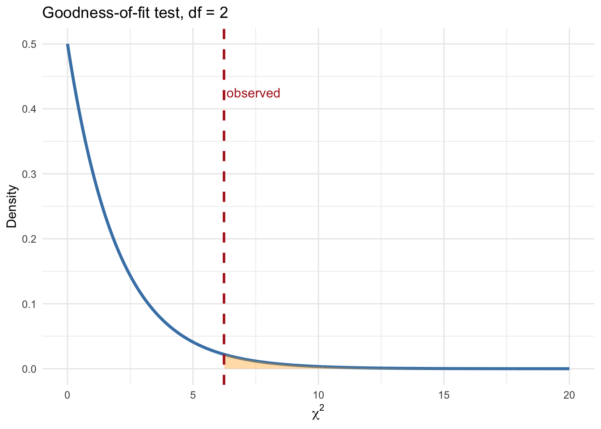
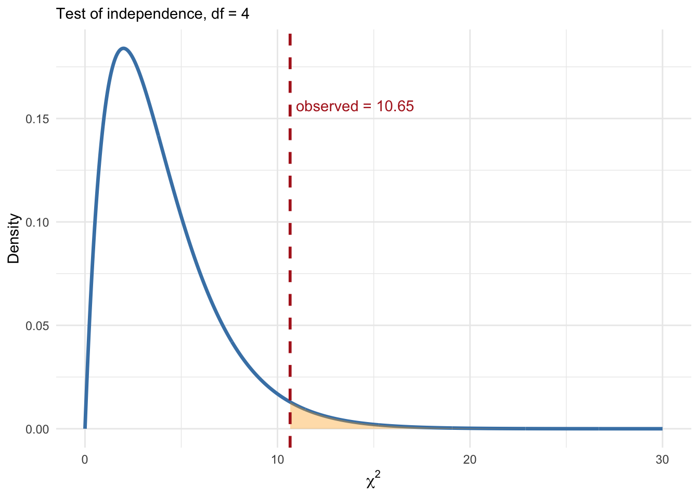

39 Week 7 Section
Chi-square tests concept check
| Feature | Goodness-of-fit test | Test of independence |
|---|---|---|
| Number of variables | Answer1 categorical variable |
Answer2 categorical variables |
| Main question | AnswerDo category proportions match a hypothesized distribution? |
AnswerAre two categorical variables associated?Or: Do multiple groups share the same underlying distribution? |
| Null hypothesis | AnswerThe observed distribution follows the claimed proportions. |
AnswerThe two variables are independent. |
40 Example: Campus café visited by student majors
41 Part 1: Goodness-of-fit test
Question:
Do Statistics, Biology, and CS students go to Voyager equally often?
Observed counts:
| Major | Count |
|---|---|
| Statistics | 39 |
| Biology | 25 |
| CS | 46 |
41.1 Step 1: Write down the hypotheses
Null hypothesis:
Your answer
Alternative hypothesis:
Your answer
41.2 Step 2: Write down the test statistic
For a goodness-of-fit test,
\[\chi^2=\sum_{i=1}^k\frac{(\text{Observed}_i-\text{Expected}_i)^2}{\text{Expected}_i}\]
with degrees of freedom
\[df = k-1\]
where:
- \(\text{Observed}_i\): observed counts
- \(\text{Expected}_i\) expected counts under \(H_0\)
41.3 Step 3: Identify quantities and compute test statistic
If the null hypothesis says all \(k\) categories are equally likely, how should we compute \(\text{Expected}_i\)?
Observed vs. expected counts
Observed counts
- Statistics: 39
- Biology: 25
- CS: 46
Expected counts
- Statistics: 36.67
- Biology: 36.67
- CS: 36.67
- Chi-square statistic: Your answer
- Degrees of freedom: Your answer
41.4 Step 4: Compute the p-value
The p-value is the probability, assuming the null hypothesis is true, of observing a test statistic at least as extreme as the one observed.
In a goodness-of-fit test, this means observing counts that deviate from the claimed distribution at least as much as the observed data.
How do we translate the p-value idea into a probability formula?
41.4.1 Chi-square reference distribution
41.5 Step 5: Make a decision
- If the p-value \(<\alpha\), reject \(H_0\)
- Otherwise, fail to reject \(H_0\)
Interpretation:
A small p-value suggests that Statistics, Biology, and CS students are not equally represented at Coupa.
42 Part 2: Chi-square test for independence
Question:
Does a student’s major affect which café they go to?
Observed counts:
| Café | Statistics | Biology | CS |
|---|---|---|---|
| Voyager | 39 | 25 | 46 |
| Bytes | 30 | 42 | 28 |
| Coupa | 24 | 29 | 37 |
42.1 Step 1: Write down the hypotheses
Null hypothesis:
Your answer
Alternative hypothesis:
Your answer
42.2 Step 2: Write down the test statistic
For a contingency table, we use the same goodness-of-fit idea, but apply it across all cells of the table. You can think of this as:
- compute the goodness-of-fit contribution within each row
- then sum those contributions across all rows
\[\chi^2=\sum_{i=1}^r\sum_{j=1}^c\frac{(\text{Observed}_{ij}-\text{Expected}_{ij})^2}{\text{Expected}_{ij}}\]
with degrees of freedom: \[df = (r-1)(c-1)\]
If the row distributions are very different from the shared distribution expected under independence, the chi-square statistic becomes large.
42.3 Step 3: Identify quantities and compute
Under the null hypothesis of independence:
- the row category should not affect the column category
- every row should follow the same overall column distribution: \(\frac{\text{column total}}{\text{grand total}}\)
Therefore expected counts: \[\text{Expected}_{ij}=\frac{(\text{row total})\times(\text{column total})}{\text{grand total}}\]
Observed vs. expected contingency tables
Observed counts
| Statistics | Biology | CS | |
|---|---|---|---|
| Voyager | 39 | 25 | 46 |
| Bytes | 30 | 42 | 28 |
| Coupa | 24 | 29 | 37 |
Expected counts
| Statistics | Biology | CS | |
|---|---|---|---|
| Voyager | 34.1 | 35.2 | 40.7 |
| Bytes | 31.0 | 32.0 | 37.0 |
| Coupa | 27.9 | 28.8 | 33.3 |
- Chi-square statistic: Your answer
- Degrees of freedom: Your answer
42.4 Step 4: Compute the p-value
The p-value is the probability, assuming the null hypothesis is true, of observing a test statistic at least as extreme as the one observed.
In a test of independence, this means observing a contingency table that deviates from the independence pattern at least as much as the observed table:
\[p\text{-value}=\mathbb{P}\!\left[\chi^2_{df}\ge\chi^2_{\mathrm{obs}}\right]\]
43 Chi-square reference distribution

43.1 Step 5: Make a decision
- If the p-value \(<\alpha\), reject \(H_0\)
- Otherwise, fail to reject \(H_0\)
Interpretation:
A small p-value suggests that café choice differs across Statistics, Biology, and CS students.